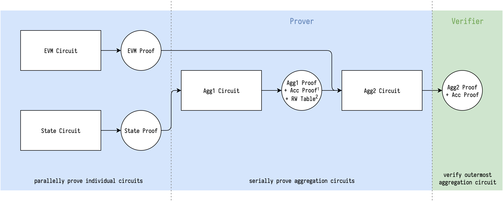

Recursion
Projects
- https://github.com/AztecProtocol/barretenberg
- https://github.com/scroll-tech/halo2-snark-aggregator
- https://github.com/trapdoor-Tech/halo2-aggregation
- https://github.com/matter-labs/solidity_plonk_verifier/tree/recursive
Aztec barretenberg
Transcript for inner cirucit
The rollup circuit uses blake2s to generate the challenge, but with compressed input by pedersen hash 1. The inputs are serialized into a list of 31 bytes field elements as the input of pedersen hash.
Also the rollup circuit use 128-bits challenge to reduce MSM work, then most of scalars are 128-bits, only those scalars multiplied with some other stuff (e.g. \(\zeta\omega^i\) or batch evaluation) would need 254-bits MSM.
Public inputs of inner circuit
Barretenberg handles the public inputs along with permutation argument 2. Its constraint system implicitly copies \(m\) public inputs \(p\) to first \(m\) witness of the first column, and because the public inputs' contribution \(\frac{1}{\delta}\) to the grand product is easy to compute, so it doesn't need to evaluate public inputs poly at \(\zeta\). Instead, it verifies grand product's final value is the contribution \(\delta\).
$$ \frac{1}{\delta} = \prod_{i\in[m]}\left(\frac{p_i + \beta\omega^i + \gamma}{p_i + \beta k_{p}\omega^i + \gamma}\right) $$
Not sure if this is cheaper than calculating evaluation of public inputs, but it's really intersting.
han
The actual verifier doesn't calculate the \(\frac{1}{\delta}\) for inner circuit, it just concatenates all the public inputs and let rollup circuit to calculate \(\frac{1}{\delta}\) for each inner circuit.
Explaination: https://github.com/AztecProtocol/barretenberg/blob/master/barretenberg/src/aztec/plonk/proof_system/public_inputs/public_inputs_impl.hpp#L5-L137
Used in permutation widget: https://github.com/AztecProtocol/barretenberg/blob/master/barretenberg/src/aztec/plonk/proof_system/widgets/random_widgets/permutation_widget_impl.hpp#L368-L369
Calculations
Interpolation
Barycentric formula 3
Using
$$ \begin{aligned} & \ell(x) = (x-x_0)(x-x_1)\cdots(x-x_k) \ & \ell^\prime(x_j) = \frac{d\ell(x)}{dx}\rvert_{x=x_j} = \prod_{i=0,i\ne j}^k(x_j-x_i) \end{aligned} $$
We can rewrite Lagrange basis as
$$ \ell_j(x) = \frac{\ell(x)}{\ell^\prime(x_j)(x-x_j)} $$
Or by defining the barycentric weights
$$ w_j = \frac{1}{\ell^\prime(x_j)} $$
Then given evaluations ${y_i}{i\in[k]} = {f(x_i)}{i\in[k]}$ of polynomial \(f\), the interpolation of \(f\) now can be evaluated as
$$ f(x) = \ell(x) \sum_{j=0}^k\frac{w_j}{x-x_j}y_j $$
Which, if the weights \(w_j\) can be pre-computed, requires only \(\mathcal{O}(k)\) as opposed to \(\mathcal{O}(k^2)\) for evaluating the Lagrange basis \(\ell_j(x)\) individually.
We can furthers simplify it by considering the barycentric interpolation of the constant function \(g(x) = 1\)
$$ g(x) = 1 = \ell(x) \sum_{j=0}^k\frac{w_j}{x-x_j} $$
Divigin \(f(x)\) by \(g(x) = 1\) doesn't modify the interpolation, yet yields
$$ f(x) = \frac{\sum_{j=0}^k\frac{w_j}{x-x_j}y_j}{\sum_{j=0}^k\frac{w_j}{x-x_j}} $$
Then we don't even need to evaluate \(\ell(x)\).
https://people.maths.ox.ac.uk/trefethen/barycentric.pdf
https://en.wikipedia.org/wiki/Lagrange_polynomial#Barycentric_form
Interpolation of rotation set
Defining rotation set \(R\) contains \(k\) different points \({\zeta_1\omega_j}_{j\in[k]}\), where \(\zeta_1\) is the challenge opening point, and \(\omega_i\) are the generator to some power (a.k.a rotation).
Not sure if all arguments of halo2 in the future still have the same opening base \(\zeta_1\) for all queries to multiopen. If not, this approach might not work. An implementation can be found here.
han
In SHPLONK, the verifier needs to calculate interpolation \(r(\zeta_{2})\) from rotation set \(R\) and their claimed evaluation value \({y_j}_{j\in[k]}\).
One of the largest benefit of barycentric formula is pre-computed barycentric weight. Although \(R\) contains different values in each proof, we can still pre-compute the normalized barycentric weight without \(\zeta_1\), to gain the benefit.
$$ w_j = \frac{1}{\prod_{i=0,i\ne j}^k(\omega_j-\omega_i)} $$
And for each rotation set, the actual work is
$$ w_j^\prime = \frac{w_j}{\zeta_1^{k-1} * (\zeta_2 - \zeta_1\omega_j)} $$
Also each rotation set might contain more than one polynomials, for each polynomial, its work is
$$ r(\zeta_2) = \frac{\sum_{j=0}^kw_j^\prime y_j}{\sum_{j=0}^kw_j^\prime} $$
Where the denominator for one set only needs to be calcuated once.
Interpolation of public inputs
All lagrange basis could be rotated from the $\ell_0(X) = \frac{X^n-1}{n(X-1)}$
$$ \ell_i(X) = \ell_0(X\omega^{-i}) = \frac{X^n-1}{n(X\omega^{-i}-1)} $$
Given \(m\) public inputs \(p\), the interpolation at \(\zeta\) is
$$ p(\zeta) = \sum_{i\in[m]}p_i\ell_i(\zeta) = \frac{\zeta^n-1}{n}\sum_{i\in[m]}\frac{p_i}{(\zeta\omega^{-i}) - 1} $$
Note that \(\frac{\zeta^n-1}{n}\) needs \(\log_2(n)\) squaring of \(\zeta\) with a substraction and a division.
And each extra public input costs about 4 operations (mul + sub + div + add).
Random thoughts
Use multi-layer recursive proof for ZKEVM
In our case, we have split ZKEVM into different pieces, with some dependency relation in between.
Fortunately, the dependency relation currently is always being like: One verified circuit serves itself as a lookup table for another. For example, once State circuit is verified to satasify its own relation, then we can synthesize its columns to be a lookup table for EVM circuit to do random access.
Serving self as a lookup table only needs to pass a single check, that is the table commitment(s) (random linearly combined or not). And the difference between fixed table and such verified private table is: The former is built when setup so it is already trusted, the latter is verified for each proof instance and is trusted as long as the relation is well-defined.
So, if a single recursive circuit can't aggregate all different circuits in ZKEVM, we can incrementally aggregate them, and only expose the verified private table's commitment(s) as public input, for next proofs' aggregation.
If we can have some kinds of "global randomness", we can do vector table's random linear combination first, then the extra public input for exposing verified private table is just a single group element (4 values in rns).
han
Illustration of serially aggregating State circuit and EVM circuit:

1. Accumulated proof which contains LHS and RHS of pairing2. RW Table contains 10 commitments which are verified to open to desired synthesized expressions